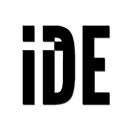
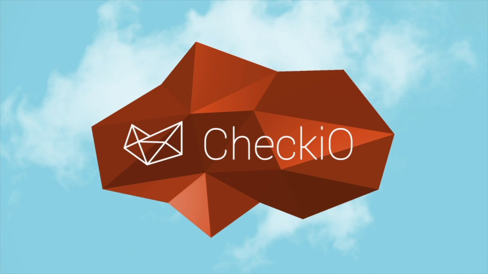
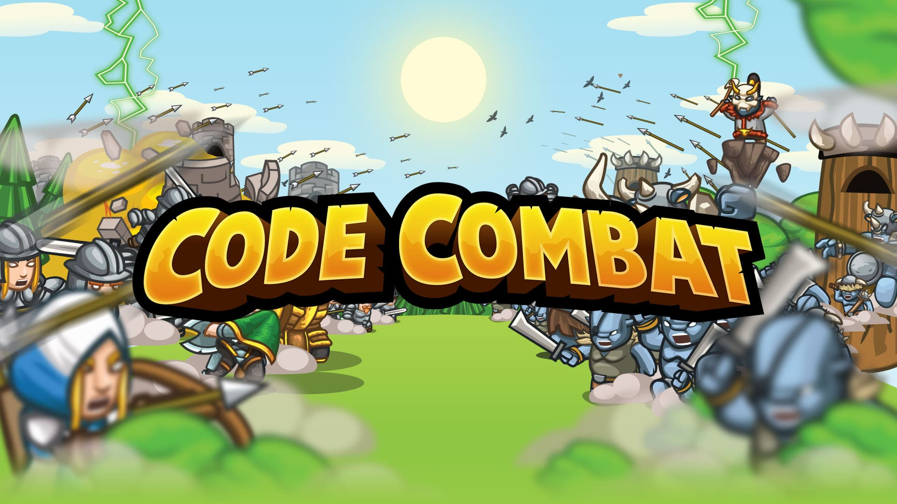
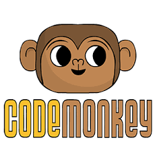
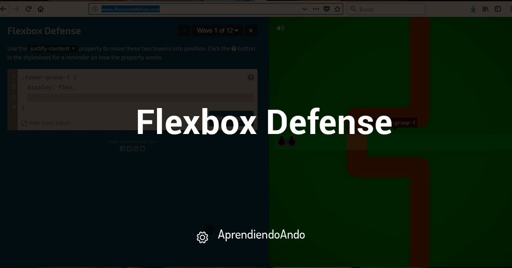
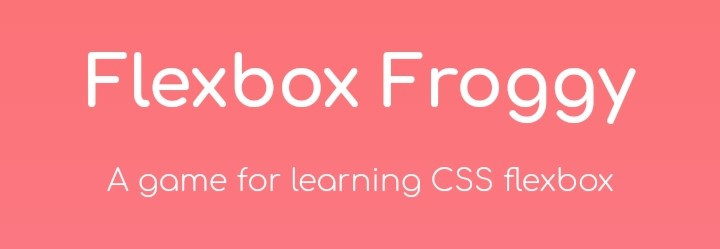
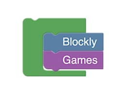
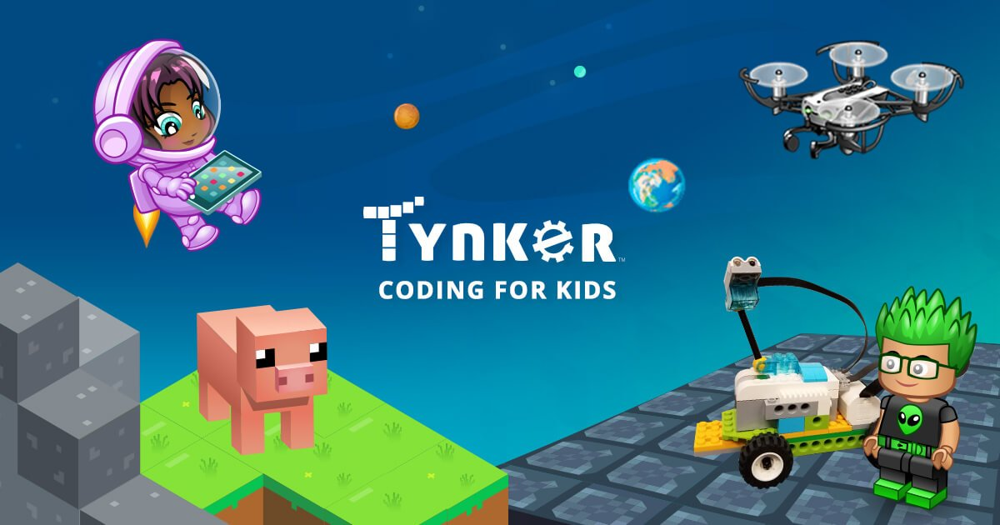
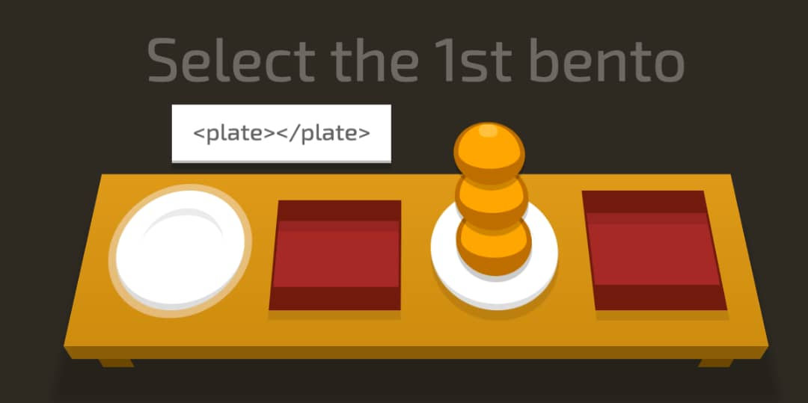
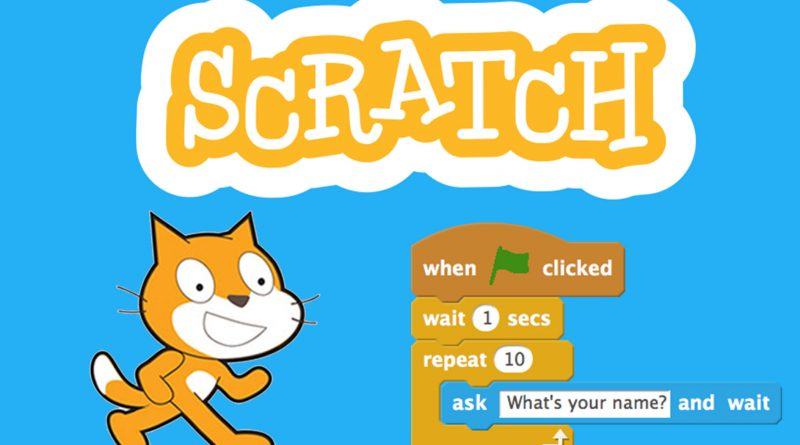

<!DOCTYPE html>
<html lang="en">
<head>
    <link rel="shortcut icon" href="css/img/BananaLogoTwo.png" />
    <meta charset="UTF-8">
    <title>IDE</title>
</head>
<body>

</body>
</html><!DOCTYPE html>
<html lang="en">
<head>
<title>Banana</title>
<meta charset="UTF-8">
<meta name="viewport" content="width=device-width, initial-scale=1">
    <link rel="stylesheet" TYPE="text/css" HREF="css/CssIDE.css">
	<link rel="stylesheet" TYPE="text/css" HREF="css/CssIDE.css" media="(min-width: 320px) and (max-width: 480px)">
    <link rel="stylesheet" TYPE="text/css" HREF="css/CssIDE.css" media="(min-width: 481px) and (max-width: 900px)">

    </head>
<body>

<div class="header">

<h1>BANANA</h1>

<p style="font-weight: bold">سورس کدهای رایگان و اطلاعاتی برای برنامه نویسان </p>
</div>

<div class="navbar">
<a href="index.php" class="active">صفحه اصلی</a>
<a href="SourceCode.html">سورس کد</a>
<a href="Books.html">کتابهای آموزشی</a>
<a href="IDE.html">IDE</a>
<a href="SingUpOrLogin.php" class="right">عضویت/ورود</a>
    <a href="AboutBananaSite.html" class="right">درباره ما/ ارتباط با ما</a>
</div>

<div class="row">
<div class="main">
    <div class="fakeimg"  ></div>
    <h1 style="color: #4c6d06;font-family: 'B Nazanin'">محیط های توسعه یافته یکپارچه IDE</h1>
    <p style="font-family: 'B Nazanin';font-size: 20px" >
        یک محیط توسعه یکپارچه (به انگلیسی: integrated development environment) با کوته‌نوشت IDE، نرم‌افزاری است که امکانات کاملی را برای برنامه نویسان رایانه جهت توسعه نرم‌افزار فراهم می‌کند. IDE معمولاً از حداقل یک ویرایشگر کد منبع، ساخت ابزارهای اتوماسیون و یک اشکال زدایی تشکیل شده‌است. برخی از IDEها، مانند NetBeans و Eclipse، حاوی کامپایلر، مترجم یا هر دو مورد لازم هستند. دیگران، مانند SharpDevel و Lazarus، چنین کاری نمی‌کنند.
    </p>

    <p style="font-family: 'B Nazanin';font-size: 20px">مرز بین IDE و سایر قسمت‌های وسیع‌تر از توسعه نرم‌افزار کاملاً مشخص نیست. گاهی اوقات یک سیستم کنترل نسخه یا ابزارهای مختلف برای ساده‌سازی یک رابط کاربری گرافیکی (GUI) یکپارچه شده‌است. بسیاری از IDEهای مدرن همچنین دارای یک مرورگر کلاس، یک مرورگر شیء و یک نمودار سلسله مراتبی کلاس برای استفاده در توسعه نرم‌افزار شی‌گرا هستند.</p>
   <h2>فهرست مطالب</h2>
    <ul style="color: #7a001c;font-family: 'B Nazanin';font-size: 20px; ">
        <li>بررسی اجمالی</li>
        <li>تاریخچه</li>
        <li style="color: #307c00">مباحث</li>
        <li style="color: #307c00">برجسته نحوه</li>
        <li style="color: #307c00">تکمیل کد</li>
        <li style="color: #307c00">پالایشگاه</li>
        <li style="color: #307c00">کنترل نسخه</li>
        <li style="color: #307c00">اشکال زدایی</li>
        <li style="color: #307c00">جستجوی کد</li>
        <li style="color: #307c00">برنامه‌نویسی بصری</li>
        <li style="color: #307c00">پشتیبانی از زبان</li>
        <li style="color: #307c00">نگرش در سیستم عامل‌های مختلف محاسباتی</li>
        <li>هوش مصنوعی</li>
        <li>محیط توسعه یکپارچه وب</li>
        <li>جستارهای وابسته</li>
        <li>منابع</li>
    </ul>
    <div class="fakeimg"  ></div>
    <ul>
        <h3 style="color: #8a6508"><li>بررسی اجمالی</li></h3><p>
        محیط‌های توسعه یکپارچه به منظور به حداکثر رساندن بهره‌وری برنامه‌نویس با ارائه مؤلفه‌های گره‌دار با رابط‌های کاربری مشابه طراحی شده‌اند. IDEها یک برنامه واحد ارائه می‌دهند که در آن تمام توسعه‌ها انجام می‌شود. این برنامه به‌طور معمول ویژگی‌های بسیاری را برای نویسندگی، اصلاح، کامپایل، راه‌اندازی و اشکال‌زدایی نرم‌افزار ارائه می‌دهد. این با توسعه نرم‌افزار با استفاده از ابزارهای نامربوط، مانند vi، GCC یا make سازگار است.
        یک هدف از IDE، کاهش تنظیمات لازم برای تکمیل چندین برنامه توسعه است؛ در عوض همان مجموعه از قابلیت‌های یک واحد منسجم را فراهم می‌کند. کاهش زمان راه‌اندازی می‌تواند بهره‌وری توسعه دهنده را افزایش دهد؛ به خصوص در مواردی که یادگیری استفاده از IDE سریعتر از ادغام دستی و یادگیری همه ابزارهای فردی است. ادغام تنگ‌تر از همه وظایف توسعه پتانسیل بهبود بهره‌وری کلی فراتر از کمک به کارهای تنظیم را دارد. به عنوان مثال، کد را می‌توان در حالی که ویرایش می‌شود به‌طور مداوم تجزیه و تحلیل کرد؛ در صورت معرفی خطاهای نحوی، فیدبک فوری ارائه می‌دهد؛ بنابراین به توسعه دهندگان امکان می‌دهد کد را بسیار سریعتر و راحت‌تر با IDE اشکال‌زدایی کنند.
        برخی از IDEها به یک زبان برنامه‌نویسی اختصاصی اختصاص داده شده‌است؛ این امکان را می‌دهد که مجموعه‌ای از ویژگی‌ها که بیشترین تطابق را با الگوی برنامه‌نویسی زبان دارد. با این حال، بسیاری از IDEهای چند زبانه وجود دارد.
        در حالی که اکثر IDEهای مدرن گرافیکی هستند، IDEهای مبتنی بر متن مانند Turbo Pascal قبل از در دسترس بودن سیستم‌های پنجره‌ای مانند مایکروسافت ویندوز و X Window System (X11) مورد استفاده رایج قرار می‌گرفتند. آنها برای اجرای دستورها یا ماکروها معمولاً از کلیدهای عملکردی یا کلیدهای مهم استفاده می‌کنند.

    </p>
        <h3 style="color: #8a6508"><li>تاریخچه</li></h3><p>
        IDE در ابتدا هنگام توسعه از طریق کنسول یا ترمینال امکان‌پذیر شد. سیستم‌های اولیه قادر به پشتیبانی از آنها نبودند، زیرا برنامه‌ها با استفاده از نمودارهای پخش شده، ورود به برنامه‌ها با کارتهای سوراخ دار (یا نوار کاغذی و غیره) قبل از ارسال آنها به کامپایلر ساخته می‌شدند. Dartmouth BASIC اولین زبانی بود که با IDE ایجاد شد (و همچنین اولین کسی بود که هنگام نشستن در مقابل یک کنسول یا ترمینال برای استفاده طراحی شده بود).[نیازمند منبع] IDE آن (بخشی از سیستم به اشتراک گذاری زمان Dartmouth) بود. مبتنی بر دستور، و بنابراین به نظر نمی‌رسد بسیار شبیه به IDEهای گرافیکی مبتنی بر منو پس از ظهور رابط کاربری گرافیکی. با این حال، ویرایش، مدیریت پرونده، تلفیق، اشکال زدایی و اجرای را به روشی سازگار با IDE مدرن یکپارچه کرده‌است.
        همچنین به ساختار برنامه‌نویسی ساخت یافته از IBM (1974) مراجعه کنید.
        Maestro I محصولی از Softlab مونیخ است و اولین محیط توسعه یکپارچه جهان برای نرم‌افزار بود. مائسترو I برای ۲۲۰۰۰ برنامه‌نویس در سراسر جهان نصب شد. تا سال ۱۹۸۹، ۶۰۰۰ نصب در جمهوری فدرال آلمان وجود داشته‌است. مائسترو مسلماً رهبر جهان در این زمینه در دهه ۱۹۷۰ و ۱۹۸۰ بود. امروز یکی از آخرین Maestro من را می‌توان در موزه فناوری اطلاعات در آرلینگتون یافت.
        یکی از اولین IDEها با یک مفهوم افزونه، Softbench بود. در سال 1995 Computerwoche اظهار داشت که استفاده یک IDE توسط توسعه دهندگان به خوبی مورد استقبال قرار نگرفته‌است زیرا این امر در خلاقیت آنها حکمر خواهد زد.
        از دسامبر سال ۲۰۱۹، سه IDE که صفحات بارگیری آنها بیشتر در جستجوی آنها قرار گرفته عبارتند از: Eclipse , Android Studio و Visual Studio.

    </p>
        <h2 style="color: #307c00"><li>مباحث</li></h2>
        <h3 style="color: #307c00"><li>برجسته نحوه</li></h3><p>
        ویرایشگر IDE معمولاً برجسته سازی نحو را ارائه می‌دهد، می‌تواند ساختارها، کلمات کلیدی زبان و خطاهای نحوی را با رنگ‌های بصری و جلوه‌های فونت نشان دهد.
    </p>
        <h3 style="color: #307c00"><li>تکمیل کد</li></h3><p>
        تکمیل کد یک ویژگی مهم IDE است که برای سرعت بخشیدن به برنامه‌نویسی در نظر گرفته شده‌است. IDEهای مدرن حتی دارای تکمیل کد هوشمند هستند.
    </p>
        <h3 style="color: #307c00"><li>پالایشگاه</li></h3><p>
        IDEهای پیشرفته پشتیبانی از پالایشگاه‌های خودکار را پشتیبانی می‌کنند.
    </p>
        <h3 style="color: #307c00"><li>کنترل نسخه</li></h3><p>
        انتظار می‌رود که یک IDE کنترل نسخه یکپارچه را به منظور تعامل با مخازن منبع فراهم کند.
    </p>
        <h3 style="color: #307c00"><li>اشکال زدایی</li></h3><p>
        IDE همچنین برای اشکال زدایی، با استفاده از یک دیباگر یکپارچه، با پشتیبانی از تعیین نقاط شکست در ویرایشگر، ارائه بصری مراحل و غیره استفاده می‌شود.
    </p>
        <h3 style="color: #307c00"><li>جستجوی کد</li></h3><p>
        IDEها می‌توانند پشتیبانی پیشرفته ای را برای جستجوی کد ارائه دهند: به منظور یافتن اعلامیه‌های کلاس و عملکرد، کاربردها، خواندن یا نوشتن متغیر و میدانی و غیره. IDEها می‌توانند از انواع مختلف رابط کاربری برای جستجوی کد استفاده کنند؛ به عنوان مثال ابزارک‌های مبتنی بر فرم و رابطه‌ای مبتنی بر زبان طبیعی
    </p>
        <h3 style="color: #307c00"><li>برنامه‌نویسی بصری</li></h3><p>
        برنامه‌نویسی ویژوال یک سناریوی استفاده است که در آن به‌طور کلی یک IDE مورد نیاز است. ویژوال بیسیک به کاربران امکان ایجاد برنامه‌های جدید را با حرکت برنامه‌نویسی، بلوک‌های ساختمانی یا گره‌های کد برای ایجاد نمودارهای جریان یا نمودارهای ساختاری می‌دهد که سپس کامپایل شده یا تفسیر می‌شوند. این نمودارها معمولاً مبتنی بر زبان مدل‌سازی یکپارچه هستند.
        این رابط با سیستم Lego Mindstorms رواج یافته‌است و توسط تعدادی از شرکت‌ها که مایل به سرمایه‌گذاری بر روی مرورگرهای سفارشی مانند آنچه در موزیلا است، فعالانه مورد سوء استفاده قرار می‌گیرد. KTechlab از کد پویا پشتیبانی می‌کند و یک IDE و شبیه‌ساز محبوب Open Source برای توسعه نرم‌افزار برای میکروکنترلرها است. برنامه‌نویسی ویژوال همچنین وظیفه قدرت برنامه‌نویسی توزیع شده را دارد (به عنوان مثال نرم‌افزار LabVIEW و EICASLAB). یک سیستم برنامه‌نویسی بصری اولیه، حداکثر، پس از طراحی سینت سایزر آنالوگ مدل شد و از 1980s برای توسعه نرم‌افزار عملکرد موسیقی در زمان واقعی استفاده می‌شود. نمونه اولیه دیگر Prograph بود، یک سیستم مبتنی بر dataflow که در ابتدا برای Macintosh توسعه یافته بود. محیط برنامه‌نویسی گرافیکی «انگور» برای برنامه‌ریزی کیت‌های ربات qfix استفاده می‌شود.
        این رویکرد همچنین در نرم‌افزارهای ویژه مانند Openlab استفاده می‌شود، جایی که کاربران نهایی می‌خواهند انعطاف‌پذیری یک زبان برنامه‌نویسی کامل، بدون منحنی یادگیری سنتی مرتبط با یک را داشته باشند.

    </p>
        <h3 style="color: #307c00"><li>پشتیبانی از زبان</li></h3><p>
        بعضی از IDEها از چندین زبان پشتیبانی می‌کنند، مانند GNU Emacs مبتنی بر سی و Emacs Lisp و IntelliJ IDEA , Eclipse , MyEclipse یا NetBeans، همه بر اساس جاوا، یا MonoDevel، مبتنی بر سی‌شارپ یا PlayCode.
        پشتیبانی از زبان‌های جایگزین اغلب توسط افزونه‌ها ارائه می‌شود و به آنها امکان می‌دهد همزمان در همان IDE نصب شوند. به عنوان مثال، Flycheck یک برنامه مدرن چک کردن نحو در پرواز برای GNU Emacs 24 با پشتیبانی از ۳۹ زبان است. Eclipse و Netbeans دارای افزونه‌هایی برای سی / سی پلاس‌پلاس، Ada ،GNAT (به عنوان مثال AdaGIDE)، Perl، پایتون، Ruby و پی‌اچ‌پی هستند که براساس برنامه‌های افزودنی فایل، محیط یا تنظیمات پروژه بین اتوماتیک انتخاب می‌شوند.

    </p>
        <h3 style="color: #307c00"><li>نگرش در سیستم عامل‌های مختلف محاسباتی</li></h3><p>
        برنامه نویسان یونیکس می‌توانند ابزارهای خط فرمان POSIX را در یک محیط کامل توسعه، قادر به توسعه برنامه‌های بزرگی مانند هسته لینوکس و محیط آن قرار دهند. [۸] به این معنا، کل سیستم یونیکس به عنوان یک IDE عمل می‌کند. ابزارهای نرم‌افزاری GNU رایگان (مجموعه کامپایلر گنو (GCC)، اشکال زدایی GNU (GDB) و ساخت GNU) در بسیاری از سیستم عامل‌ها از جمله ویندوز در دسترس هستند. فلسفه فراگیر یونیکس «همه چیز یک جریان متنی است» توسعه دهندگان را که از ابزارهای خط فرمان پشتیبانی می‌کنند، قادر به استفاده از ویرایشگرهایی با پشتیبانی از بسیاری از ابزارهای استاندارد ساخت یونیکس و GNU، ساختن IDE با برنامه‌هایی مانند Emacs یا Vim می‌کند. داده نمایشگر اشکال زدایی در نظر گرفته شده‌است به عنوان یک جلو گرافیکی پیشرفته برای بسیاری از ابزارهای استاندارد دیباگر مبتنی بر متن. برخی از برنامه نویسان، مدیریت ساختن فایلها و مشتقات آن را با ابزار ساختن کدهای مشابه که در یک IDE کامل گنجانده شده‌است، ترجیح می‌دهند. بعنوان مثال، بیشتر مشارکت کنندگان در پایگاه داده PostgreSQL و GDB را مستقیماً برای ایجاد ویژگیهای جدید استفاده می‌کنند. حتی هنگام ساخت PostgreSQL برای Microsoft Windows با استفاده از Visual C ++، از اسکریپت‌های Perl به جای اینکه به ویژگی‌های IDE تکیه کنید، جایگزینی برای ساخت استفاده می‌شود. برخی از IDEهای لینوکس مانند Geany تلاش می‌کنند تا جلوی گرافیکی را برای عملیات ساخت سنتی ارائه دهند.
        در سیستم عامل‌های مختلف ویندوز مایکروسافت، از ابزارهای خط فرمان برای توسعه به ندرت استفاده می‌شود. بر این اساس، بسیاری از محصولات تجاری و غیرتجاری وجود دارد. با این حال، هر یک از طراحی متفاوتی که معمولاً ناسازگاری ایجاد می‌کند، استفاده می‌کنند. اکثر فروشندگان اصلی کامپایلر برای ویندوز هنوز نسخه‌های رایگان ابزار خط فرمان خود، از جمله مایکروسافت (Visual C ++، Platform SDK , .NET Framework SDK، ابزار nmake) را ارائه می‌دهند.
        IDE همیشه در محیط‌های Mac OS و MacOS کلاسیک اپل محبوب بوده و قدمت آن به کارگاه برنامه نویسان Macintosh , Turbo Pascal , THINK Pascal و THINK C در اواسط دهه ۱۹۸۰ بازمی‌گردد. در حال حاضر برنامه نویسان macOS می‌توانند بین IDEهای بومی مانند Xcode و ابزارهای منبع بازمانند Eclipse و Netbeans را انتخاب کنند. ActiveState Komodo یک IDE اختصاصی چند زبانه است که در macOS پشتیبانی می‌شود.

    </p>
        <h3 style="color: #8a6508"><li>هوش مصنوعی</li></h3><p>
        برخی از ویژگی‌های IDE می‌توانند از پیشرفت‌های هوش مصنوعی بهره‌مند شوند. به‌طور خاص، می‌توان اطلاعاتی را از اقدامات IDE در بین توسعه دهندگان جمع‌آوری کرد تا ویژگی‌های IDE را تقویت کنند. به عنوان مثال، یک رویکرد مبتنی بر داده برای تکمیل کد منجر به تکمیل کد هوشمند می‌شود.
    </p>
        <h3 style="color: #8a6508"><li>محیط توسعه یکپارچه وب</li></h3><p>
        یک محیط توسعه یکپارچه وب (Web IDE)، همچنین با عنوان IDE آنلاین یا Cloud IDE شناخته می‌شود، یک IDE مبتنی بر مرورگر است که امکان توسعه نرم‌افزار یا توسعه وب را فراهم می‌کند. از یک مرورگر وب مانند گوگل کروم یا موزیلا فایرفاکس می‌توانید به یک IDE وب دسترسی داشته باشید و یک محیط کار قابل حمل را فراهم کند. یک وب IDE معمولاً شامل همه ویژگی‌های یکسان با یک IDE سنتی یا رومیزی نیست، اگر چه تمام ویژگی‌های اصلی IDE مانند برجسته کردن نحو، معمولاً وجود دارد.
    </p>
        <h3 style="color: #8a6508"><li>جستارهای وابسته</li></h3><p>
<ul>
        <li>Wing IDE برای پایتون</li>
        <li>IDLE برای پایتون</li>
        <li>پای‌دو برای پایتون</li>
        <li>Eclipse برای زبان‌های برنامه‌نویسی مانند جاوا-C - C# - پایتون و…</li>
    </ul>
    </p>
        <h3 style="color: #8a6508"><li>منابع</li></h3><p>
        مشارکت‌کنندگان ویکی‌پدیا. «Integrated development environment». در دانشنامهٔ ویکی‌پدیای انگلیسی، بازبینی‌شده در ۱۰ ژوئن ۲۰۲۰.
    </p>

    </ul>
    <h3 style="color: #b70023">موارد بیشتر و مرتبط</h3>
    <h4>با کلیک کردن بر روی هر کدام از آن ها پی دی اف دانلود می شود و سپس شما قادر به مطالعه آن خواهید بود.</h4>
    <ul>
      <li> <a href="https://s18.picofile.com/d/8434208284/9dcfa5ec-2496-4d70-906d-4871febe3315/%D9%81%D9%87%D8%B1%D8%B3%D8%AA_%DA%A9%D8%A7%D8%B1%D8%A8%D8%B1%D8%AF%DB%8C_%D8%AA%D8%B1%DB%8C%D9%86_%D9%85%D8%AD%DB%8C%D8%B7_%D9%87%D8%A7%DB%8C_%D8%AA%D9%88%D8%B3%D8%B9%D9%87_%DB%8C%D8%A7%D9%81%D8%AA%D9%87_IDE.pdf">فهرست کاربردی ترین محیط های توسعه یافته IDE</a></li>
  <br>
        <li><a href="https://s19.picofile.com/d/8434208418/58b04afb-ae47-4d66-a1e2-7b057a887fc8/%D9%85%DA%A9%D8%AA%D9%88%D8%A8.pdf">با کاربردهای  IDEآشنا شوید</a></li>
    <br>
        <li> <a href="https://s19.picofile.com/d/8434208342/cf7235a3-2aa5-4c3c-b666-26681c4b11e9/%D9%85%D8%B9%D8%B1%D9%81%DB%8C_13_%D9%85%D9%88%D8%B1%D8%AF_%D8%A7%D8%B2_%D8%A8%D9%87%D8%AA%D8%B1%DB%8C%D9%86_IDE_%D9%87%D8%A7_%D8%A8%D8%B1%D8%A7%DB%8C_%D8%A8%D8%B1%D9%86%D8%A7%D9%85%D9%87_%D9%86%D9%88%DB%8C%D8%B3%DB%8C.pdf">معرفی  13مورد از بهترین  IDEها برای برنامه نویسی</a></li>
    </ul>
</div>
<div class="side0">
<h2>تبلیغات</h2>
    <h4 style="font-family: 'B Nazanin'">معرفی بازهای آنلاین برای یادگیری برنامه نویسی :  </h4>
    <a href=" https://checkio.org"></a>
    <a href="https://codecombat.com"></a>
    <a href="https://www.codemonkey.com"></a>
    <a href="https://www.codingame.com"></a>
    <a href="https://screeps.com"></a>
    <a href="https://www.bloc.io/ruby-warrior#"></a>
    <a href=" http://www.crunchzilla.com/code-monster"></a>
    <a href="http://www.flexboxdefense.com"></a>
    <a href="https://flexboxfroggy.com"></a>
    <a href="https://www.codewars.com"></a>
    <a href="https://blockly.games/"></a>
    <a href="https://www.tynker.com/parents/?lmid=coupon&mc_coupon=discount-20&mc_condition_1=122000000800192000122000000800192000&mc_condition_2=2dc44ea9e7a1109cbef68f77b58187e8&gclid=CjwKCAjwn9v7BRBqEiwAbq1Ey227pLmI3HUA_nQLHLP1GSPEfgh-j2ZLZYG68VQxsjmCnev94OCYZRoC7uEQAvD_BwE"></a>
    <a href="https://www.codemoji.com/"></a>
    <a href="https://flukeout.github.io"></a>
    <a href="https://store.steampowered.com"></a>
    <a href="https://scratch.mit.edu/"></a>

</div>
</div>

<div class="footer">
    <div class="side1">
        <h1>درباره ما</h1>
        <h3 style="font-family: 'B Nazanin'">سایت سورس کد و اطلاعات برنامه نویسی BANANA</h3>
        <h4>در اين سايت ما به شما عزيزان اطلاعاتي همچون آموزش، مطالب و مقالات، اخبار،
            <br>برنامه و...در ارتباط با برنامه نويسي را ارائه ميدهيم</h4>
        <p>براي كسب اطلاعات بيشتر لطفا به صفحه درباره ما/ارتباط با ما در سايت مراجعه كنيد.</p>
        <h1>راه هاي ارتباطي ما</h1>
        
    </div>
</div>

</body>
</html>
